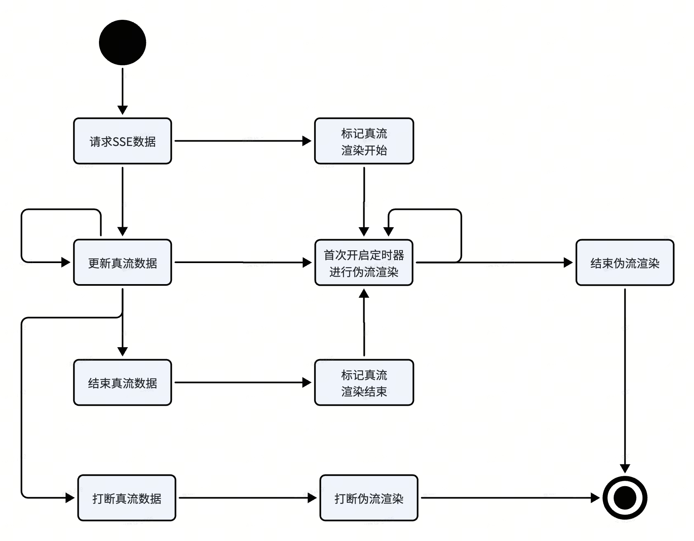

背景
在使用ChatGPT或者LLM时，模型的回复内容是逐字输出的，而不是整段话直接出现，因为模型需要不断预测接下来要回复什么内容，如果等整段回复生成之后再输出到终端，用户体验就会很差。为了适应大模型流式输出，终端也必须实现流式渲染能力。大模型为了增强表达能力，一般都会采用富文本格式（例如
Markdown 格式，HTML
格式等），而不是普通的纯文本格式。流式的输出，富文本的加持，这无疑对端上的渲染能力提出了挑战。本文将结合业务场景聊聊端上是如何实现富文本的流式渲染，这里的富文本包括
HTML 和 LaTeX。
实现原理
流请求
AFNetworking-streaming 提供了一个 chunk 数据返回的接口，要做的事情简单来说是发一次请求，需要处理多个response 回调和最后的结果回调。当数据刚回来时会触发一次headerCallback，接着随着服务端数据发送，会触发多次dataCallback，最后发送结束时会触发一次callback。数据流通过dataCallback获得，需要客户端根据与服务端约定好的分隔符进行解析。
1 | NSURL *url = [NSURL URLWithString:@"https://raw.githubusercontent.com"]; |
伪流式解析
为了支持流式渲染，首先要支持 HTML 和 LaTeX
等富文本的流式解析，然而端上并没有真正意义上的流式解析器，而要做真正的流式解析也会面临很多困难，所以端上选择的方案是“伪流式解析”：解析器每次接收到流式文本，都会拼接上之前已有的文本，重新从头解析一遍。
标签不完整规则
由于富文本是有一定的格式的，这意味着任何时刻，流式文本格式有可能是不完整或者不符合语法规则的，在非流式场景下会被当成错误来处理，但是在流式场景下，这是“正常情况”，所以需要一些异常处理规则：
- 闭合的标签都会被输出，未闭合的标签都会被吞没：
- <div>是已闭合
- 如果<div>123，会输出123
- 如果<div><span>123</span><b>456，会输出123456
- 而<div、<di、<d、<img src=“http://都是未闭合，会被吞没；
- <div>是已闭合
- 叶子节点都会被正常输出
这里的闭合含义：HTML中标签的前半部分只要是完整的就认为是闭合
公式不完整规则
tex标签有些特殊，根本原因是里面的文本还要经过LaTeX引擎的解析，所以最后是否输出取决于latex文本的语法是否合法:
<tex>\frac{1}{2}，尽管没有</tex>，但是里面的文本是完整的，所以也会正常渲染<tex>\frac{2}{</tex>，尽管标签已完整，但是latex文本有语法错误，也会被吞没
伪流式渲染
iOS的富文本渲染是基于YYText做的渲染，如果按照流式渲染的原理来做的话，需要魔改YYText，使得YYText支持流式渲染，这无疑是需要付出巨大代价的，所以端上选择了伪流式渲染机制。
核心原理
伪渲染机制的核心就一个字：“遮”。通常来说，当给定一段富文本，经过解析生成NSAttributedString，YYLabel生成的排版信息是确定的，可以先全部渲染出来，然后给YYLabel添加一层遮罩，然后像“刮刮卡”一样，每次选中一个格子刮开，这样就会有流的感觉。
遮罩方案如视频所示（1 为DEBUG版本，2 为正常版本）：
红色的横向遮罩和蓝色的纵向遮罩，每流一个字，红色的遮罩宽度向右减小一个字符的距离，直到该行文字流完。此时红色遮罩已到下一行，而蓝色遮罩的高度向下减小一行的高度。流的过程中，始终将loading图展示在红色遮罩的最左端。
注意：遮罩的颜色需要和底层视图的颜色保持一致，且不能包含有透明色
流式渲染流程

- 端上发出SSE请求，代表真流开始，同时也会同步给渲染引擎，内部会标记伪流渲染开始，开始loading；
- 中间会收到多次真流数据回调，第一次回调的时候，引擎会生成真流数据对应的排版信息，并开始定时器进行流式渲染。之后每次收到真流数据，都会将其拼接到之前收到的真流数据后面，重新生成排版信息，并将前一次的排版信息进行覆盖。引擎内部的流式渲染每次只判定当前的进度是否超越排版的末尾，没有的话，就向前“撕开”一个格子；
- 真流结束的时候，会生成最后的排版信息并更新，同时会标记真流已结束。当内部引擎流完已有排版信息的时候，会判断当前真流是否结束，如果已结束，则会结束伪流渲染，否则的话，引擎会等待新的真流数据的到来。
- 某些情况下，需要直接打断伪流渲染，可以直接调用相应的API，引擎内部会关闭定时器，在当前流到的位置后面添加……，标识流是被打断的。
卡片膨胀

业务场景中流式卡片大多存在于滑动列表中，不同于传统的业务场景中卡片的高度是自外向内来决定的，流式卡片的高度是自内向外来决定的，所以引擎在流式渲染的过程中需要时刻回调，通知外面的cell卡片自己的宽度和高度。实际上只更新cell的高度还不够，还需要有一个容器负责切边，因为仅有遮罩还不够，还需要把当前未流到的区域裁剪掉。
如果流式卡片在列表中，那么在流式过程中更新了model的高度之后，是不能调用 reloadData 或者 reloadItemsAtIndexPaths: 等方法去刷新cell的，会造成闪烁，应该使用下面的方法只去刷新cell的高度（不刷新内容）
1 | // UITableView |
踩坑记
先输出latex文本，后又正常渲染
由于数据是流式返回的，可能会出现完整的公式 被截断返回的中间状态，在端上会出现渲染闪动的问题，即：先渲染出部分原始文本，直到端侧拿到完整数据后，再渲染出正确的结果，造成视觉上的闪动。
造成这种现象的原因是：嵌套在HTML里面的公式如果用的是$xxx$来表达的话，那么在解析器处理之前，会被正则匹配为$(a-b)，那么这个匹配是不会成功的，所以$(a-b)会被当成纯文本来处理，直接文本输出。后续数据完整了，变成了$(a-b)^{2}$，则会被正常解析和渲染出来。
解决策略是：对于不完整的$xx公式，会被正则替换为LaTeX引擎正常解析渲染，则会被吞没，否则会输出。但是考虑到一些边界case未能被考虑到，iOS采取了一劳永逸的方案：对于这种不完整的LaTeX引擎解析，返回空，流式效果就是在公式的开始处一直处于loading状态。
文本双边对齐问题
通常来说，YYLabel提供了现成的API来设置双边对齐能力:view.textAlignment
=
NSTextAlignmentJustified，然而这会在流式渲染过程中出现闪烁问题（如视频所示），根本原因是双边对齐在排版中会涉及到调整已经渲染过文字的位置，从而造成文字闪烁（如视频所示），这种对齐方式适合于静态卡片，但是不适合于流式渲染卡片。
显示覆盖问题
在流式过程中，引擎要依赖YYTextLayout去获取当前字符的位置，然而在某些情况下，换行的时候获取到的位置信息有问题。

如图所示，第N个格子流完之后，当前行已经流完，下一个位置应该是第N+2个格子，但是YYTextLayout返回的是第N+1个格子，这个格子区域很大，不仅重复了已经流过的区域，而且把未流的区域也提前暴露了出来，从而造成先显示又遮挡的闪烁问题。
经过排查，这个和YYTextLayout计算Rect并集的逻辑有关系，有些Rect的宽度或者高度为0，是不需要进行并集计算的，排除即可。

修改 rectForRange: 方法如下：
1 | - (CGRect)rectForRange:(YYTextRange *)range { |
下划线间距问题

YYText是无法支持调整文字和下划线之间的间距的，但是业务场景中这是个强需求，解决方案就是去修改YYText的YYTextDrawDecoration方法，增加下划线偏移
1 | + (instancetype) decorationWithStyle: (YYTextLineStyle)style width: (nullable NSNumber *)width color: (nullable |
然后在YYTextDrawDecoration方法中把偏移值offset计入下划线的y坐标中
1 | static void YYTextDrawDecoration(YYTextLayout *layout, CGContextRef context, CGSize size, CGPoint point, YYTextDecorationType type, BOOL (^cancel)(void)) { |
修改之后，会经常出现最后一行下划线丢失的问题，主要原因是由于最后一行设置的下划线间距过大的话，会超越了布局范围，从而被裁切。所以还需要扩大布局信息：在布局方法中最后确定布局大小的时候，把这个偏移值也考虑在内。
1 | + (YYTextLayout *)layoutWithContainer:(YYTextContainer *)container text:(NSAttributedString *)text range:(NSRange)range { |
下划线 Attachement
富文本会包含公式、图片，他们通常以attachement的方式出现在NSAttributedString中，有些情况下，公式或者图片的高度明显大于普通文本的高度，所以下划线会有问题，如图所示，下划线直接穿过公式，明显不符合产品要求。

因为需要再次修改YYText排版逻辑：核心逻辑就是在每行排版过程中，获取attachement的ascent和descent，在最大的descent的基础上进行偏移。
1 | static void YYTextGetRunsMaxMetricOfAttachment(CFArrayRef _Nonnull runs, CGFloat * _Nullable xHeight, CGFloat * _Nonnull underlinePosition, CGFloat * _Nullable lineThickness) { |
1 | static void YYTextDrawDecoration(YYTextLayout *layout, CGContextRef context, CGSize size, CGPoint point, YYTextDecorationType type, BOOL (^cancel)(void)) { |
这个问题有个前提就是
Attachement必须正确地设置ascent和descent，否则的话无法解决问题。
闪烁+错位问题
从现象上看，应该是流的时候的排版信息和实际显示的排版信息有差异，从而导致错位和闪烁。通过排查发现这个问题是由于短时间内对YYText进行了频繁的刷新导致，所以需要修改原来的方案：
收到流文本，不再把新生成的排版信息刷到视图上，而是把该排版信息记录下来。视图流完当前的排版信息，会回去检查排版信息是否有更新，有的话，则把新的排版信息刷到视图上，继续流，否则的话伪流渲染完成。在当前排版信息的流式渲染过程中，新的排版信息可能会被多次更新（覆盖）。这样做不仅可以避免视图的频繁刷新，解决闪烁和错位问题，还可以提升性能。
1 | - (void)updateStreamingTextLayout:(YYTextLayout *)textLayout { |
1 | - (void)startRenderingTimer { |
流式渲染打断进度同步到TTS
在业务场景中，原始的富文本通常需要经过渲染引擎的解析，把富文本转换为可朗读文字投喂给TTS引擎进行朗读，通常情况下这不会有什么问题，但是在业务中有一个打断的流式场景，最后显示…，但是可朗读文本是提前被整体投喂给TTS的，所以就会导致TTS朗读的文本比流式渲染的文本要多，而喂多了想取消可能不是一件容易的事情。因此最终的解决方案是：每渲染一个字符，渲染引擎会吐对应的文本到TTS（TTS内部有缓存队列），这样当流式渲染被打断的时候，投喂TTS的文本也会到此为止，IM也会把这个index记录下来，之后重新播放也可以定位到相同的位置，从而保证了渲染和TTS最终文本的一致性。
$…$$…$问题
这个问题比较复杂，先讲点背景：传统的 TeX 有两种排版公式的方法：
- inline math mode，其中公式包含在段落中，TeX早期使用\(...\)来表示
- display math mode，其中公式独占一行，TeX早期使用 \[...\]来表示
如今，标准最佳实践是避免使用 $ 字符来排版公式，而是使用 LaTeX 分隔符，例如：
- 对于inline math mode，使用(… ) 、\begin{math}…\end{math}， 而不是\(...\)；
- 对于display math mode，使用 [… ] 、 \begin{displaymath}…\end{displaymath}，而不是 \[...\]；
回到业务场景，Latex公式通常都嵌套在HTML中，所以首先要进行HTML解析，为了方便解析，使用自定义标签
大模型来了之后，前面提到的各种分隔符都是有可能返回的，所以端上渲染还是得支持这些分隔符，以
\(...\) 和 \[...\]为例：端上一开始的做法相当简单：在解析之前，使用正则优先匹配
\[...\]，然后匹配\(...\)
，将它们替换为
1 | - (void)preprocess { |
直到有一天大模型返回了$…$$…$，打破了这份平静：它的本意是想表达两个连续的公式，但是由于中间的$$耦合了，导致端上的正则逻辑失败：端上先匹配$$…$$，匹配失败，然后匹配$…$，最后将...\$\$...当成latex文本来处理，从而导致错误。
端上最终放弃了正则匹配方案，采用了遍历入栈出栈方案：
- 当碰到$符号时候，看看栈中是不是有$，有的话优先出栈，此时一个公式匹配完成；
- 否则考虑下一个字符是否是$
- 如果是，则组成$$
- 看看栈中是不是有$$，有的话优先出栈，此时一个公式匹配完成；
- 否则将$$入栈，标记一个公式的开始；
- 否则将$入栈，标记一个公式的开始；
- 如果是，则组成$$
1 | - (void)preprocess { |
该遍历入栈出栈方案带来了灵活和自由，不仅可以处理$和$$问题，同时可以将(…), […]顺手解决，另外也可以处理HTML语法标记符号转义的问题，所有的问题都可以在一次遍历中全部解决，这在正则方案中是不太可能的。 此外该遍历入栈出栈方案也获得了性能上的收益：Latex的预处理耗时降到了正则方案的1/2~1/4。
总结
前文提到的流式渲染都是建立在YYText的基础上进行的，得益于YYText的良好的排版机制，可以使用“伪流式”快速实现流式效果，满足业务需求，但是同时也碰到了很多问题，踩了很多坑。即使如此，目前的伪流式方案有一些天然的缺陷：
- 由于是基于
YYText，很多问题还是需要去修改YYText源码，无法将YYText当成黑盒来处理，这给以后的开发和维护工作也提升了门槛和难度； - 业务侧的排版控制很弱，尤其涉及到一些表格、列表等块元素，端上非常吃力，终归结底是
YYText主要还是针对文本的排版，涉及到图文表混排，以及他们的嵌套排版，如果想控制一些细节，YYText表现的会有些吃力，因为在attachment和YYText是分离的，很难利用YYText的排版渲染能力； HTML和LaTeX在渲染层是割裂的，公式整体作为一个attachment被嵌入到YYText中，只能作为一个View被整体输出，很难实现流式渲染效果。。。 未来可能需要构建一套能融合多种富文本语法的渲染引擎，尽管上层的语法是不同的，但是底层的渲染框架是一致的，这样就能带来统一的渲染能力和更加灵活的定制能力，为解决块元素嵌套渲染，公式流式渲染等问题提供更大的可能性。
思考几个问题：
- 是否有可能做真正意义上的流式解析器？
- 是否可以减少排版的次数？
- 是否可以做到真正意义上的流式渲染？